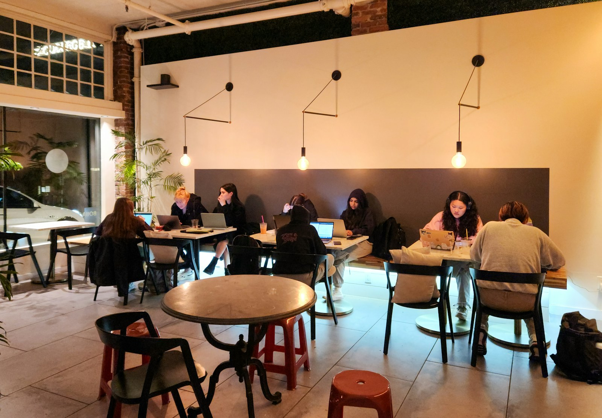
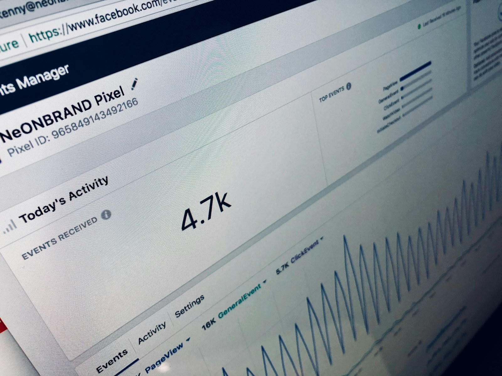
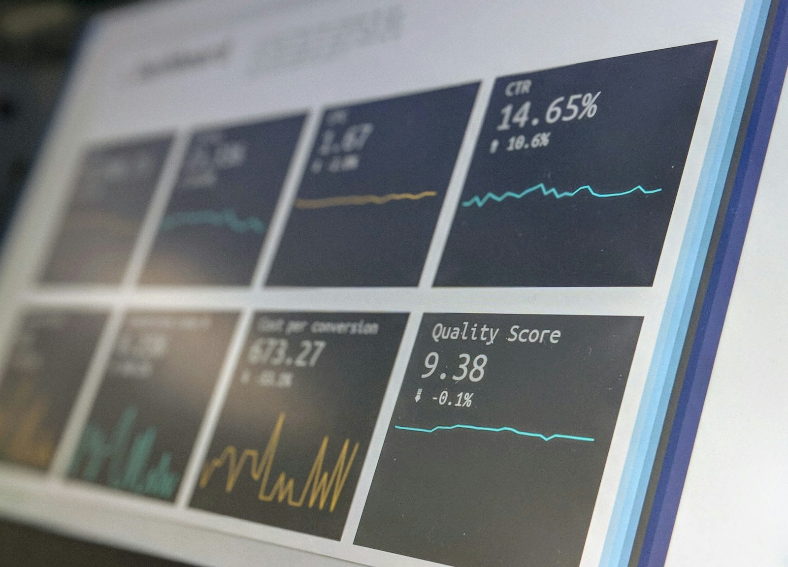

Observar la decisión
El agente decide usando la heurística de Clase 12.
Convierte resultados reales en ajustes de confianza para que tu agente mejore sus decisiones.
En la Clase 12 tu agente aprendió a decidir usando una heurística. Ahora aprenderá a revisar si esa decisión funcionó y a ajustar su confianza con base en feedback.

El feedback convierte la experiencia en ajuste.
Si una recomendación funciona varias veces en casos similares, el agente puede confiar más en ella.
El agente decide usando la heurística de Clase 12.
Compara lo esperado contra lo que realmente pasó.
Si el feedback confirma la decisión, la confianza sube. Si falla, baja.
Pregunta: ¿qué conviene hacer ahora?
Concepto: heurística.
Pregunta: ¿funcionó lo que hice?
Concepto: feedback y confianza.
Pregunta: ¿cómo aprende un modelo automáticamente?
Concepto: redes neuronales y ajuste de pesos.
Hoy ajustamos confianza de forma manual y explicable. En la próxima clase veremos cómo una red neuronal ajusta pesos automáticamente con muchos datos.
Feedback es la información que recibimos después de una decisión. Indica si funcionó, funcionó a medias, falló o todavía no tenemos suficiente información.
La decisión funcionó.
Ayudó, pero no resolvió todo.
La decisión falló.
No sabemos si funcionó.

La confianza mide qué tan seguro está el agente de que una acción funcionará en un caso parecido. No significa que sea buena siempre.
Caso 1: aceptado ✅ → 75%
Caso 2: aceptado ✅ → 80%
Caso 3: rechazado ❌ → 73%
La confianza crece cuando una decisión funciona varias veces en contextos parecidos.
Una decisión no termina cuando el agente responde. Termina cuando observamos qué pasó después.
| Caso | Decisión | Esperado | Real | Feedback |
|---|---|---|---|---|
| Calor + dulce + frío | Frappé | Acepta | Aceptó | Positivo |
| Calor + poco presupuesto | Café caliente | Acepta | Rechazó | Negativo |

En la Clase 12 la confianza era un valor inicial. Ahora puede cambiar según la experiencia.
| Posición | Acción | Confianza | Puntaje |
|---|
Calcula la recomendación para guardar el ranking inicial.
Aplica feedback para observar el cambio.
Si el feedback se repite, una decisión puede mantenerse con más respaldo o cambiar. Por ejemplo, varios rechazos por precio podrían hacer que el combo económico supere al frappé.
La lógica funciona en cafetería, escuela, soporte, salud o ventas: decisión, resultado, feedback y ajuste.
No registres solo si te gustó la decisión. Registra qué pasó realmente.
| Caso | Acción | Esperado | Real | Feedback | Observación | |
|---|---|---|---|---|---|---|
| Agrega tu primer registro. | ||||||
| Acción | Confianza inicial | Feedback recibido | Ajuste | Confianza nueva | Justificación | |
|---|---|---|---|---|---|---|
| Agrega acciones de tu agente. | ||||||
El puntaje usa los valores de cada acción. La comparación muestra si el feedback cambió la decisión final.
Agrega acciones y calcula.
Los ajustes aparecerán aquí.
Abre Colab, crea un cuaderno nuevo y nómbralo con tu agente.
Guarda beneficio, confianza, seguridad, costo y riesgo.
Suma señales favorables y resta costo y riesgo.
Ordena las opciones y toma la de mayor puntaje.
Guarda el caso, lo esperado, lo real y la señal.
Usa +5, +1, −7 o 0 y limita entre 0 y 100.
Calcula el ranking antes y después del ajuste.
Explica qué evidencia cambió y qué aprendió el agente.
Completa tu caso y tus acciones para generar Python personalizado.
Tu reporte aparecerá aquí.